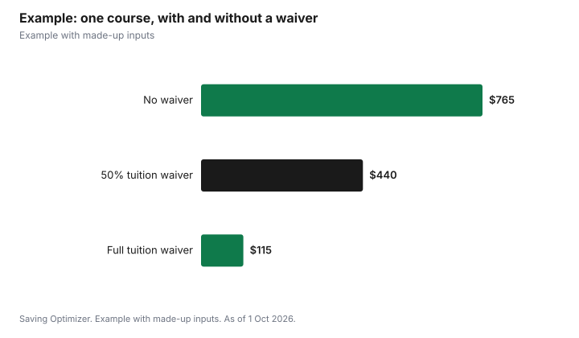

Education · Canada
Free or Reduced University Tuition for Seniors in Canada: School-by-School Rules
Many Canadian universities and colleges waive some or all tuition for older adults, but the age is usually 65, not 60, and the waiver covers tuition only. Of five schools whose rules are below, UFV, Capilano University, KPU and the University of Regina offer tuition-free courses to people 65 or older, and Lakehead waives 50% of undergraduate tuition. Expect limits on how many courses you can take, registration only if seats remain, and fees for applications, student services, labs and books. Check your local school's registrar page, since the rules are set school by school.
Key takeaways
- The schools below set the age at 65, measured at the start of the term or classes.
- The waiver covers tuition, not application, ancillary, lab or material fees.
- Course caps are common: two courses a term at UFV, one at KPU.
- Seats are usually space-available, after fee-paying students register.
- Lakehead waives 50% of undergraduate tuition rather than all of it.
- Example with made-up inputs: a $650 course costs $115 in fees with a waiver.
Rules at five schools
| School | Age rule | What is waived | Limits |
|---|---|---|---|
| University of the Fraser Valley (BC) | 65 or older by the start of classes for the term | Tuition | Up to two courses (max 5 credits each) in fall and winter; space permitting |
| Capilano University (BC) | 65 or older before the start of a term | Tuition (some surcharges and fees still apply) | Proof of age to student financial accounts before the fee payment deadline |
| Kwantlen Polytechnic University (BC) | 65 before the first day of classes; BC-resident citizen or permanent resident | Tuition | One undergraduate course (4 credits max) per semester, three a year; not for credential seekers |
| Lakehead University (ON) | 65 at the time of enrolment; citizen or permanent resident | 50% of undergraduate tuition | Credit courses only, not audit; limited-enrolment courses excluded |
| University of Regina (SK) | 65 or older in the term of registration | Tuition | Up to 15 credit hours in fall and winter combined, 6 in spring and summer |
What you still pay
Every school above limits the waiver to tuition. UFV says older adult students are responsible for the application fee, ancillary fees, semester fees and any mandatory supplementary course fees. Lakehead's policy says seniors buy their own books and supplies and pay laboratory, studio, field trip and similar fees. The University of Regina says the waiver applies to tuition only, and students pay material, laboratory, student and other course-related fees. Ask your school for a fee estimate before you register, so you know the real cost.
Registration timing and seats
The waiver usually depends on space. UFV says the tuition-free registration period begins about two weeks before classes each semester, and that if you register earlier on a full-fee basis you cannot switch back to tuition-free status. KPU says the exemption form can be submitted from the 15th of the month before the term, for example 15 August for fall, until the add/drop deadline, that a fee-paying student must not be displaced, and that seniors who register and pay early cannot apply for the exemption afterwards. The University of Regina excludes courses already filled with students paying tuition.
This means popular courses may be full by the time you can register for free. If one particular course matters to you, you may have to choose between paying full tuition to secure a seat and waiting to see if space opens.
| School | Rule |
|---|---|
| UFV | Tuition-free registration starts about two weeks before classes; early full-fee registration cannot be converted |
| KPU | Form from the 15th of the month before term until add/drop; no displacing fee-paying students; no retroactive exemption |
| Regina | Form each term, by the end of the term; courses filled with tuition-paying students excluded |
| Lakehead | Instructor decides admission and prerequisites; limited-enrolment courses excluded |
Courses that do not qualify
Each school excludes some courses. KPU excludes Continuing and Professional Studies, fixed-term apprenticeship, foundation, continuous-intake and cost-recovery offerings. The University of Regina excludes thesis or project supervision, internships and co-op placements, courses held outside Canada, courses in fully online programs and contract courses. UFV publishes lists of courses and programs that require full fees. Lakehead lets the academic unit head decide exclusions for limited-enrolment courses. If you want a fully online course, check carefully; Regina's exclusion is for fully online programs.
Credit, audit and credentials
Rules differ on whether you can earn a credential. KPU says seniors pursuing a credential are not eligible and must apply and pay as regular students. Lakehead's waiver applies only to registration for credit, not to auditing. UFV requires you to complete the admission process by its deadlines and be eligible for course registration. If you want a degree or diploma, ask the registrar whether the waiver would apply to the whole program.
Example with made-up inputs: one course
These numbers are an example with made-up inputs. They are not any school's real fees. A 66-year-old takes one three-credit course with $650 tuition, a $45 application fee, $50 in student and ancillary fees and a $20 lab fee. With a full tuition waiver, the course costs $115. With a 50% waiver, it costs $440. With no waiver, it costs $765. Over a year of two courses a term in fall and winter, the full waiver saves $2,600 in tuition in this example.
| Item | No waiver | 50% waiver | Full waiver |
|---|---|---|---|
| Tuition | $650 | $325 | $0 |
| Application fee | $45 | $45 | $45 |
| Student and ancillary fees | $50 | $50 | $50 |
| Lab fee | $20 | $20 | $20 |
| Total | $765 | $440 | $115 |

Other options for older learners
If no nearby school offers a waiver, compare non-credit continuing education courses, free open courses and community programs. If you have an RRSP and plan full-time study, read about the Lifelong Learning Plan's rules first; see the Lifelong Learning Plan. For free open textbooks, see cutting textbook costs.
Questions to ask the registrar
| Question | Why it matters |
|---|---|
| On what date is age measured? | UFV uses the start of classes; Lakehead the time of enrolment; Regina the term of registration |
| Is it full or partial tuition? | Lakehead waives 50%, the others in this guide waive tuition |
| How many courses or credits a term? | Caps range from one course to 15 credit hours |
| Which fees still apply? | Application, ancillary, lab and material fees can add up |
| Can I register before the free window? | At UFV and KPU, paying early means losing the waiver |
| Does it apply to online courses? | Regina excludes courses in fully online programs |
| Do residency or citizenship rules apply? | KPU requires BC residency; Lakehead citizens or permanent residents |
Write the answers down for each school you are considering. Two schools a short drive apart can differ by hundreds of dollars a term once course caps and remaining fees are counted, and the cheaper option is not always the one with the bigger headline waiver.
Steps
- Search your nearest university or college registrar's site for seniors' or older adult tuition.
- Check the age rule and the date it is measured.
- Note course limits, exclusions and whether credit or audit qualifies.
- Ask for the fees that still apply.
- Mark the date the free registration period or form window opens.
- Have proof of age and citizenship or residency ready.
Sources
- University of the Fraser Valley, Tuition exemption for older adults, ufv.ca, as of 1 Oct 2026.
- Capilano University, Tuition-free courses, capilanou.ca, as of 1 Oct 2026.
- Kwantlen Polytechnic University, Senior citizen fee exemption, kpu.ca, as of 1 Oct 2026.
- Lakehead University, Tuition waiver for seniors policy, lakeheadu.ca, as of 1 Oct 2026.
- University of Regina, Seniors' tuition waiver, uregina.ca, as of 1 Oct 2026.
- Tuition and fee amounts in the example are an example with made-up inputs.
Frequently asked questions
Can seniors go to university for free in Canada?
Some schools waive tuition for older adults. UFV, Capilano University, KPU and the University of Regina offer tuition-free courses for people 65 or older, and Lakehead waives 50% of undergraduate tuition, as of 1 Oct 2026. Fees beyond tuition still apply.
Is the age 60 or 65?
All five schools in this guide use 65. Check your own school, since each sets its own rule.
What fees do seniors still pay?
Typically application, ancillary, student, lab, material and book costs. UFV, Lakehead and the University of Regina all say the waiver covers tuition only.
How many courses can seniors take free?
It varies. UFV allows up to two courses in fall and winter terms, KPU one course per semester and three a year, and Regina up to 15 credit hours in fall and winter combined.
Can I get a degree with a seniors' tuition waiver?
Not at KPU, which excludes credential seekers. Other schools differ; ask the registrar whether the waiver applies to a full program.
When can seniors register for tuition-free courses?
Often late, once fee-paying students have registered. UFV's tuition-free period begins about two weeks before classes; KPU's form opens on the 15th of the month before term.
Researched and drafted with AI assistance and fact-checked against official Canadian sources. How we create content.
Disclosure: Saving Optimizer may earn a commission if a partner link is added later, such as a learning platform offer type. No partnership is claimed on this page. Education only.